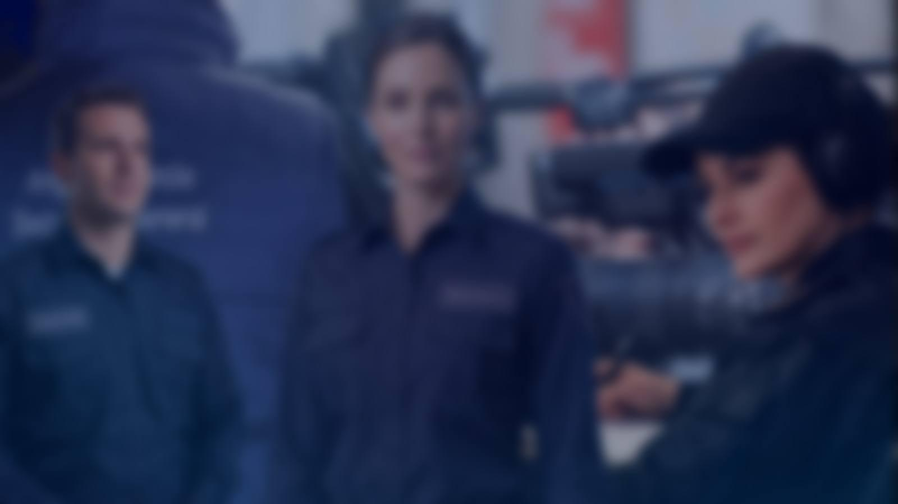
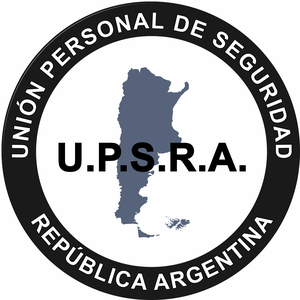
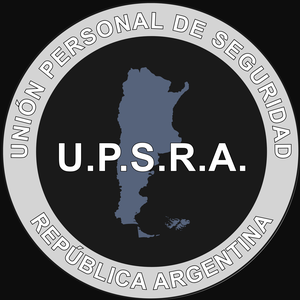
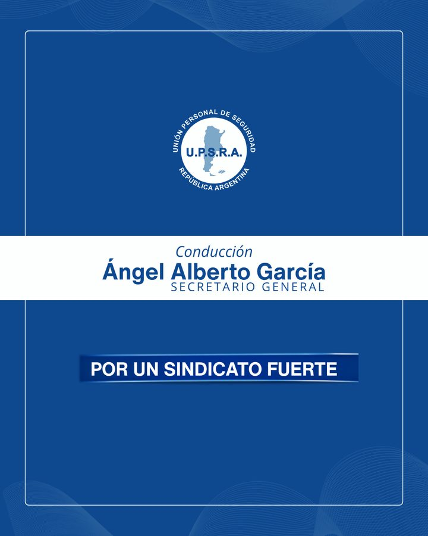
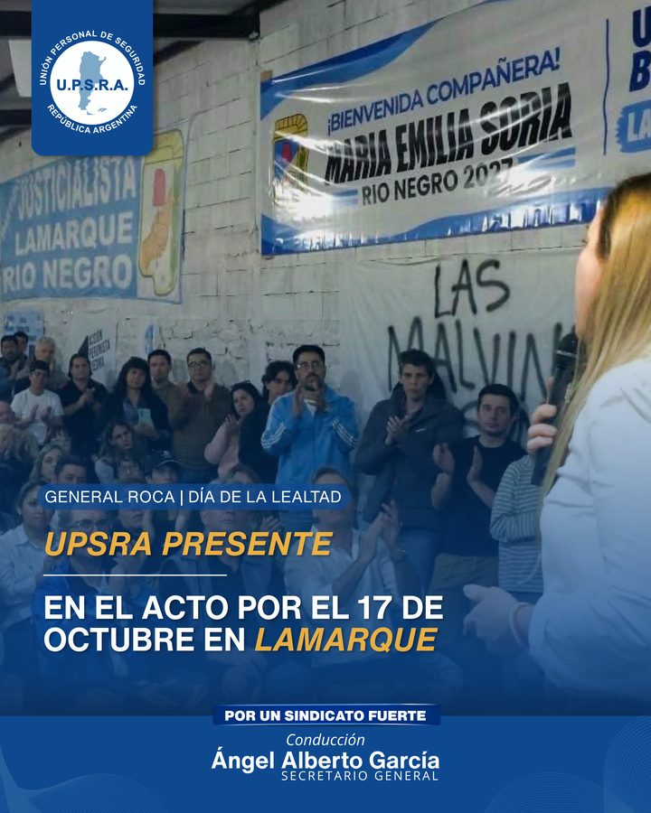
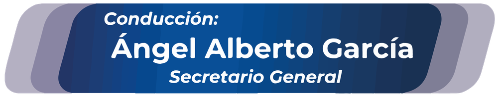
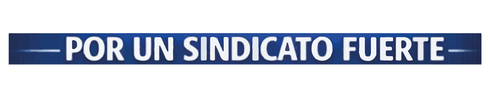
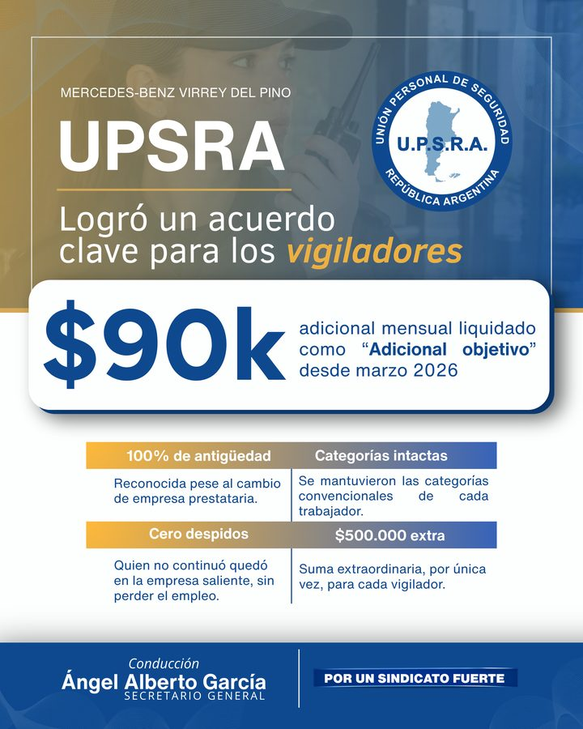
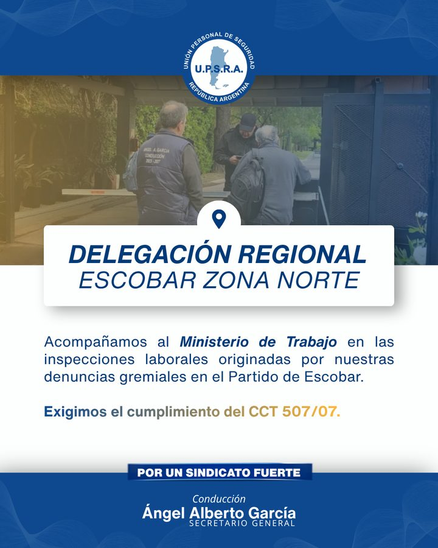
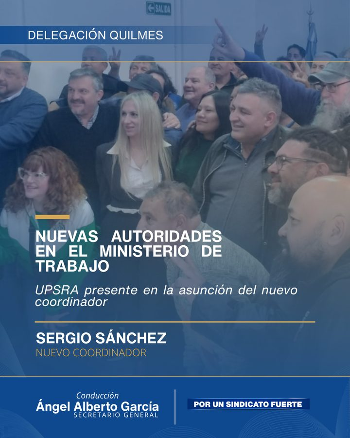

Manual de Identidad Visual
Secretaría de Prensa y Relaciones Públicas — UPSRA
Cómo se ve y cómo habla UPSRA
Reglas para que cada flyer, placa, historia o video, lo haga quien lo haga, se reconozca como UPSRA. Uso obligatorio para prensa de todas las delegaciones, el equipo de diseño y los proveedores externos.

Identidad visual
El logo oficial, sus partes y sus variantes
Anatomía del logo
- Anillo exterior. Franja azul con el texto en arco «Unión Personal de Seguridad · República Argentina».
- Círculo interior blanco. Da contraste al mapa y a la sigla.
- Mapa de la Argentina. Con las islas Malvinas. Símbolo de alcance nacional.
- Sigla U.P.S.R.A. En azul y en negrita. Es el elemento de máxima identidad.
Variantes oficiales


Sí
- Usar siempre el archivo oficial en alta resolución (sección 10).
- Mantener las proporciones y dejar aire alrededor del logo.
- Elegir la variante según el fondo.
- Incluir el logo en toda pieza institucional.
No
- Estirar, aplastar, rotar o recortar el logo.
- Cambiar sus colores o agregarle sombras y efectos.
- Usar versiones pixeladas.
- Mezclar dos variantes en la misma pieza.
Paleta de colores
Los colores oficiales y dónde va cada uno
El dorado nunca va en títulos ni en la palabra «UPSRA». Se usa solo en líneas decorativas, bordes de acento y etiquetas de 3ª/4ª jerarquía (por ejemplo, «Pre-inscripciones:»).
Azules de las placas
Los que se usan hoy en las piezas de redes, medidos sobre las placas reales.
Qué color lleva cada elemento
| Títulos, subtítulos y listados | Blanco |
| Etiquetas de 3ª/4ª jerarquía | Dorado + texto blanco |
| Líneas decorativas | Dorado |
| Fondo de placas | Foto con blur + capa azul UPSRA (30–50 %) |
| Documentos | Texto oscuro sobre blanco |
Tipografía
Dos familias: Archivo para títulos y Public Sans para el resto
| Uso | Fuente y peso | Muestra (como se ve en una placa) |
|---|---|---|
| Título principal | Archivo ExtraBold, mayúsculas, blanco | Instituto de Formación Profesional |
| Subtítulo | Public Sans SemiBold, blanco | Formación gratuita y 100 % online |
| Cuerpo y listados | Public Sans Regular, blanco | Capacitación federal para afiliadas y afiliados |
| Etiqueta de 3ª/4ª jerarquía | Public Sans Bold dorado + Regular blanco | Pre-inscripciones: completá el formulario |
| Premios y resaltes | Archivo ExtraBold, mayúsculas, blanco | 20 premios increíbles |
| Documentos Word | Arial Regular / Bold, texto oscuro | Comunicado oficial UPSRA |
Sí
- Archivo para títulos y Public Sans para todo lo demás.
- Texto blanco sobre fondo oscuro o foto con overlay.
- Pesos Regular, SemiBold y Bold.
No
- Cursiva en títulos o subtítulos.
- Sombras duras o tipografías decorativas o manuscritas.
- Más de dos familias en una pieza.
- Texto sobre foto sin overlay de contraste.
Fuentes para descargar
Archivo
Títulos y resaltes. Peso recomendado: ExtraBold 800. Gratuita, disponible en Canva.
Descargar Archivo (se abre en una pestaña nueva)Public Sans
Subtítulos, cuerpo y etiquetas. Pesos Regular, SemiBold y Bold. Gratuita, disponible en Canva.
Descargar Public Sans (se abre en una pestaña nueva)Para documentos Word se usa Arial, que ya viene instalada en todas las computadoras.
Ejemplo real

Jerarquía en tres niveles: «Conducción» como antetítulo, el nombre en negrita grande y el cargo en mayúsculas espaciadas. El lema va en su franja, en mayúsculas y en negrita. Todo el texto va en blanco o en azul UPSRA, sin dorado.
Estilo fotográfico
Cómo elegir y tratar las fotos
Sujeto
Vigiladores en contexto laboral real, con postura profesional. El uniforme dice «SEGURIDAD» y no lleva el logo del sindicato.
Fondo
Siempre desenfocado. Ambiente corporativo, industrial o de seguridad privada.
Luz
Cálida y controlada. Sin sobreexposición ni aspecto de historieta.
Overlay
Capa azul UPSRA (#0D2B5E) al 30–50 % sobre la foto.
Encuadre
Plano medio o americano, con aire para el logo y el título.
Diversidad
Mujeres y varones en la mayor cantidad de piezas, juntos en la misma imagen cuando el formato lo permite.
Evitar
- Fotos de archivo genéricas o con estética publicitaria barata.
- Fondos saturados o con colores ajenos a la paleta.
- Fotos sin tratar o con filtros externos exagerados.
- Imágenes generadas por IA que se noten como tales.
Composición de placas
Formatos y dónde va cada elemento
Una sola placa de 1080 × 1350 sirve para Instagram y Facebook: no hace falta diseñar dos.
Ejemplo: cómo usar los recursos en una placa
Esta pieza real muestra dónde va cada recurso de la sección 10. Los números de la imagen coinciden con la lista.

- Logo (recurso: Logo color PNG). Visible sin ser excesivo. En esta pieza va arriba a la izquierda, sobre un recuadro azul.
- Foto con capa azul (sección 04). La foto ocupa toda la placa y se oscurece hacia abajo para que el texto se lea.
- Antetítulo: lugar y motivo, en una cinta («General Roca | Día de la Lealtad»).
- Título: blanco, en mayúsculas y bien grande. Va donde mejor funcione en la pieza.
- Cierre institucional (recurso: Cierre para placas). Franja azul abajo con el lema y la conducción. Es lo único fijo: siempre abajo y sin recortar (sección 07).
- Margen: ningún texto pegado al borde. Dejá al menos 70 px a los lados en una placa de 1080 px.
Tono y comunicación
Cómo escribimos
El estilo es
- Institucional y formal, sin ser frío.
- Claro y directo, sin tecnicismos innecesarios.
- Con giros obreros argentinos cuando corresponde.
- Firme sin ser confrontativo.
- Reflexivo: interpela, no solo informa.
- Cercano al afiliado, con respeto genuino.
El estilo evita
- Proselitismo o alineación partidaria.
- Lenguaje agresivo sin necesidad.
- Promesas que no se pueden sostener.
- Términos legales sin explicación.
- Humor inapropiado para el contexto gremial.
- Frases vacías.
Filosofía organizacional
Sindicato fuerte con los trabajadores. Orgullo por la actividad. Respeto por el afiliado.
Parte del mismo sistema. Negociación sin rendición. Diálogo sin debilidad.
Colaboración sin ceder derechos. Presencia institucional, sin subordinación.
Cierre institucional
Obligatorio en toda pieza oficial


- Texto fijo: «Conducción: Ángel Alberto García, Secretario General».
- Lema: «POR UN SINDICATO FUERTE», en mayúsculas.
- Posición: franja inferior, sobre azul UPSRA.
- Cómo hacerlo: usar las imágenes listas de la sección 10, sin rearmarlas.
Video
La misma identidad, en movimiento
Colores y fuentes
Los mismos que en las placas. Un video y una placa del mismo tema se tienen que reconocer como del mismo sindicato.
Transiciones y ritmo
Fundidos suaves y cortes sin apuro. Sin flashes ni efectos bruscos: el tono es institucional.
Apertura y cierre
Logo al inicio. Al final, el cierre de video oficial (sección 10), tal cual o mejorado sin perder logo, conducción y lema.
Ejemplos visuales
Piezas reales que siguen el manual



Qué funciona en estas piezas
- Logo visible sin ser excesivo.
- Jerarquía clara: lugar o delegación, título y texto de apoyo.
- Foto con capa azul UPSRA y texto blanco legible.
- Cierre institucional completo en la franja inferior, siempre igual.
Datos de producción
- Formato: 1080 × 1350 px (4:5).
- Colores: ver sección 02.
- Fuentes: Archivo y Public Sans.
- Programas: Canva, CapCut o Photoshop.
Recursos descargables
Bajá solo lo que necesitás


Archivos PNG para placas
Recortes en alta resolución (11813 × 11813 px) con fondo transparente, para armar placas en Canva o Photoshop.